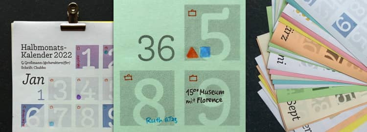

Auf dieser Website ist Platz für das, wofür mein Twitterprofil @charakterziffer nicht ausreicht. Mein Blog ist als Plus zu meinen Tweets gedacht, eben „@cz+“. // Die letzten drei Artikel:
Der Alltag der meisten Menschen gliedert sich in einen festen Rhythmus aus sieben Tagen: Ein verschlafener Montag, ein organisierter Dienstag, ein Mittwoch mit Bergfest, ein langer Donnerstag, ein Freitag voller Vorfreude und dann (endlich) das Wochenende: Samstag mit aufräumen, einkaufen, Freizeit, und der Sonntag zum Faulenzen oder für Zeit mit Familie und Freunden. So weit, so normal – oder?
Wer Schichtdienst in einem 10- oder 12-Tage-Rhythmus arbeitet, wer selbstständig oder schon in Rente ist, für den ist diese 7-Tage-Einteilung nicht ganz so selbstverständlich. Wenn man ausnahmsweise mal Dienstagmittag einkaufen geht, mittwochs Auto wäscht oder den Donnerstagmorgen im Museum verbringt, dann erlebt man eine Welt, die so ganz anders ist als gewohnt. Den eigenen Rhythmus zu verändern und zu hinterfragen, eröffnet eine neue Perspektive darauf, was ein normaler Alltag sein kann.

Auch dieses Jahr habe ich wieder einen Halbmonatkalender gestaltet, so wie schon oft zuvor. Das besondere an dem Design ist, dass eine Woche nicht in der gleichen Zeile steht, sondern Montag bis Mittwoch oben und dann Donnerstag bis Sonntag darunter. Damit werfe ich natürlich nicht den etablierten 7-Tage-Takt über den Haufen. Aber es ist doch ungewohnt und erfordert anfangs ein Umdenken, um den Kalender zu lesen. Aus der Zweiteilung der Woche ergeben sich gestalterisch einige Vorteile:
kompakte Anordnung, so dass die Wochen sogar im Hochformat auf eine DIN-A5-Seite passen – und zwar trotzdem mit …
Platz zum Reinschreiben, nämlich rund 8 cm² für kurze tägliche Notizen.
große Zahlen, die sich gut lesen lassen, auch wenn der Kalender drüben an der Wand hängt.
2–3 Wochen im Überblick, um einige Tage voraus- und zurückzuschauen.
ein frisches Konzept gibt’s als Bonus oben drauf, also nicht die 08/15-Vorlage in der abgenutzten Allerweltschrift Helvetica/Arial.
Stattdessen ist die Schriftart meines Kalenders dieses Jahr Chubbo von Rafał Buchner, erschienen im März bei der Indian Type Foundry.
Wer Graustufen lieber mag und dafür den Kalender auf farbiges Papier drucken möchte, kann die Schwarz-Weiß-Version herunterladen (PDF, 298 kB). Dann auf zwölf A4-Seiten ausdrucken, auf Wunsch jedes Blatt halbieren, sortieren und die Einzelblätter zusammenheften – zum Beispiel mit einer Vielzweckklammer, mit einer Spiralbindung aus dem Copy-Shop, mit etwas Leim entlang der oberden Kante oder einfach jede Seite mittig gelocht und aufgehängt.
Ich freue mich sehr, wenn ihr meinen Kalender weiterempfehlt. Dafür steht er unter einer Creative-Commons-Lizenz mit Namensnennung, nicht kommerzieller Nutzung und Weitergabe unter gleichen Bedingungen (CC BY-NC-SA). Wer den Kalender bearbeiten möchte (beispielsweise die optionalen Feiertage aufs eigene Bundesland anpassen), möge mich bitte kurz anschreiben oder hier kommentieren. Dann verschicke ich gerne die SVG-Dateien.
Jetzt, ein Jahr später kann ich es ja hier veröffentlichen, ohne den Beschenkten noch etwas zu verraten. Zum letzten Weihnachtsfest habe ich nämlich die Zutaten abgezählt, gewogen und mit folgendem Rezept als Geschenkpaket verschickt. (Praktisch: Die Lebensmittel konnte ich auch während des damaligen Lockdowns besorgen … erinnert sich noch wer?)
Zutaten (für etwa 100 ml Sirup)
300 ml Wasser
150 g Kokosblütenzucker
2 Beutel Schwarztee
2 Sternanis
4 Kapseln Kardamom
1 kleine Prise Muskatnuss
6 Nelken
1 Zimtstange
1 Vanilleschote (längs aufgeschnitten)
1 kleines Stück Ingwer (in Scheiben)
Zubereitung des Sirups
Wasser und Zucker in einem Topf unter ständigem Rühren aufkochen. Die Teebeutel in den Sirup hängen und die restlichen Zutaten hinzufügen.
Den Sirup für 20 Minuten bei offenem Deckel leicht köcheln lassen. Allerdings schon nach 10 Minuten die Teebeutel herausnehmen.
Schließlich den Chai-Sirup heiß durch ein Sieb in ein vorbereitetes Glas oder eine Flasche gießen. Haltbarkeit mindestens 1 Jahr.
Eine Chai Latte herstellen
Für ein Glas Chai Latte etwa 200 ml Milch erhitzen, nach Wunsch aufschäumen und einfach 2 Esslöffel des Sirups hinzufügen. Natürlich kann der Sirup alternativ in Milchersatzprodukte oder Wasser gerührt und nach Geschmack sogar kalt getrunken werden.
Und wie erwähnt: Die Zutaten eignen sich hervorragend für eine Rezept-Geschenkbox, es ist ja bald wieder Weihnachten ;-) Zum Ausdrucken hier noch das Rezept und Etiketten fürs Glas als PDF.
Ein größeres Projekt hat viel Zeit beansprucht, weshalb ich seit über zwei Monaten keinen neuen Blogartikel veröffentlicht habe. Nun ist eine arbeitsreiche Phase abgeschlossen und ich komme dazu, über ein kleines Unterfangen zu schreiben.
Weil ich Buchstaben sehr mag, habe ich für mein Arbeitszimmer einen besonderen Wandanstrich umgesetzt. Zunächst habe ich die entsprechende Wand weiß grundiert und trocknen lassen. Danach habe ich die Kante zur Nachbarwand abgeklebt und anschließend die Klebekante nochmals weiß gestrichen. Im ersten Bild sieht man das beigefarbene Maskierband und den weißen Strich darüber. Falls dabei nämlich Farbe unter das Band läuft, gibt das auf der Nachbarwand nur weiße Spuren und keine Flecken der späteren Grundfarbe Grau.
Kurz antrocknen lassen, dann die graue Farbe auftragen – erst mit Pinsel und kleiner Farbrolle ringsherum an den Kanten und schließlich mit einer größeren Rolle auf der ganze Fläche. Je nach Deckkraft sollte die Wand nach dem Trocknen ein zweites Mal gestrichen werden, damit die Fläche schön gleichmäßig grau wird.
Meine Bildvorlage mit den Buchstaben habe ich am Computer erstellt und darüber zur Orientierung ein rotes Gitter gelegt. Die Schnittpunkte habe ich mit blauem Washi-Tape auch an der Wand markiert. Dann begann die Nachtschicht.
Von einer befreundeten Agentur konnte ich mir netterweise einen Beamer ausleihen, mit dem ich das Motiv an die Wand projiziert habe. Damit die roten Linien aus der Vorlage genau mit den markierten Schnittpunkten an der Wand übereinstimmen, musste ich das Bild am Computer deutlich verzerren. Dann habe ich nach und nach alle Buchstabenkanten abgeklebt. Hierfür am besten ein gutes Maskierband benutzen, damit man später scharfe Kanten bekommt und auch keinen grauen Untergrund von der Wand abzieht.
Für die runden Kanten unbedingt ein spezielles Abklebeband für Kurven verwenden! Es lässt sich flexibel in Form ziehen und man schafft damit auch enge Bögen wie den oberen Tropfen am f.
So arbeitet man sich nun Abschnitt für Abschnitt vor, bis das komplette Motiv auf die Wand übertragen ist. Genau wie am Anfang sollte man die Klebekanten nun wieder in der Grundfarbe vorstreichen (diesmal das Grau der Wand, sieht im Bild ziemlich hell aus), damit diese Farbe ggf. unter das Maskierband fließen kann.
Danach die Buchstaben mit weißer Farbe füllen – schön vorsichtig, um nicht über die abgeklebten Kanten zu malen. Auch diesen weißen Anstrich habe ich nach kurzem Antrocknen wiederholt, sonst hätte ich leichte graue Verläufe in den Buchstaben gehabt.
Ich habe gehört, am besten zieht man das Maskierband ab, wenn die Farbe noch feucht ist, damit es weniger Abplatzungen gibt. Auf jeden Fall sollte man beim Abziehen sehr vorsichtig und geduldig sein, um keine Wandfarbe abzulösen und saubere Farbkanten zu bekommen. Wo das Abziehen nicht ganz gelungen ist oder wo man aus Versehen über das Maskierband gemalt hat, dort habe ich mit einem feinen Pinsel ein wenig nachgearbeitet (perfekt wird es nicht!).
Natürlich hat die Arbeit länger gedauert als gedacht (allein das nächtliche Abkleben fast vier Stunden), aber ich bin mit dem Ergebnis sehr zufrieden. Die Buchstaben füllen die gesamte Wand und bilden ein schönes Muster. Bitte bedenkt bei dieser Anleitung, dass ich kein Malerprofi bin – bestimmt gibt es Dinge, die man eigentlich anders macht oder die mit ein bisschen Fachkenntnis leichter gehen. Ich hoffe aber, meine Schilderung inspiriert euch auch zu schönen Projekten!
Das Wort kombiniert Persönlichkeit (Charakter) mit Sachlichem (Ziffer). Zusammengesetzt ergibt sich ein Synonym für Mediävalziffer, eine Zahlenvariante mit Ober- und Unterlängen.
Schriftarten dieses Blogs
Wenn dein Browser eingebettete Schriften (WOFF2) unterstützt, dann liest du die Fließtexte hier in der Source Sans Pro von Paul D. Hunt, erschienen 2012 bei Adobe.
Die Überschriften sind aus der czSlab gesetzt, die ich für dieses Blog gestaltet habe. Sie orientiert sich an Yanones viel ausgefeilterer Antithesis von 2014.
§ 1 Externe Links · Dieses Blog verlinkt auf Websites Dritter. Zum Zeitpunkt der erstmaligen Verlinkung waren dort keine Rechtsverstöße ersichtlich. Da ich keinen Einfluss auf fremde Websites habe, kann ich für deren Inhalte und Gestaltung keine Haftung übernehmen. Sollte ich von Rechtsverstößen erfahren, entferne ich die Verlinkung unverzüglich. Eine ständige Kontrolle der externen Links ist ohne konkrete Hinweise aber nicht zumutbar.
§ 2 Datenschutzerklärung · Mir ist der Schutz deiner Daten sehr wichtig. Deshalb verzichte ich auf Cookies, vermeide möglichst Dienste von Drittanbietern und erhebe so wenige Daten wie es geht. Diese Website kann ohne die Angabe persönlicher Daten genutzt werden.
Die einzige Ausnahme sind Kommentare. Wenn du einen meiner Texte kommentierst, bekomme ich die eingegebenen Daten und eine Zeitangabe per (prinzipiell unsicherer) E-Mail zugestellt. Falls dein Kommentar sachlich zur Diskussion beiträgt, ergänze ich ihn öffentlich sichtbar unter dem entsprechenden Artikel. Dabei sind sämtliche Angaben freiwillig (Name, Website, Mailadresse, Kommentar) – auch anonyme Kommentare sind möglich.
§ 3 Widerspruch gegen Direktwerbung · Die Verwendung meiner Kontaktdaten zur gewerblichen Werbung ist ausdrücklich nicht erwünscht; ich widerspreche hiermit jeder kommerziellen Nutzung und Weitergabe meiner Daten (gemäß § 21 DSGVO). // Über private Fanpost freue ich mich allerdings sehr und antworte darauf mit großem Vergnügen!
 @charak
@charak
{kind=link}